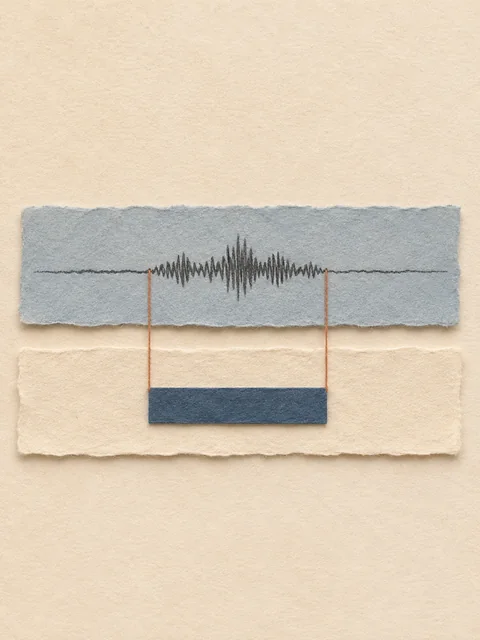

先写下你会检查的文件与播放位置。随后比较拟说原句、听辨记录和练习字幕，分别注明来源。
GAI · 5.2
转写配音与
字幕核查
用同一段声音检查指令与字幕起止
 VER. 2611
Built with impress.js
VER. 2611
Built with impress.js
GAI | M5 | 5.2 | 分清声音、文本与时间
草案通过了吗？
屏幕写着“The draft is approved.”。资料要求你确认听到了什么
2/27
SOUND AND TEXT
GAI | M5 | 5.2 | 分清声音、文本与时间
这次核对三条提示的文字和时点
把可复查的位置、修订和未测项放进同一张证据单
- ■在同一段合成语音中定位关键短句
- ■用给定 WebVTT 对照否定、版本和时间
- ■另存修订稿，用原声音证据或文字筛查说明修订理由
3/27
SOUND AND TEXT
GAI | M5 | 5.2 | 分清声音、文本与时间
语音识别把声音转换为文字
自动语音识别 ASR 可先给一版转写，供人回听高风险位置
如果转写把 not 漏掉，一条暂停指令会变成通过指令。检查时先记录显示出的文字，再回到原音或标待听。
本次已经有两份字幕可查，不要求运行新的语音识别。
4/27
SOUND AND TEXT
GAI | M5 | 5.2 | 分清声音、文本与时间
语音合成从文字生成声音
文字转语音 TTS 可把拟说文本制成一条配音
课程历史文件 AUD-003 是实际合成语音。本节使用保存的音频，拟合成文本可以帮助定位。
现有源材料能说明生成前拟说什么。要知道学生实际听到什么，需用原音回听记录。
5/27
SOUND AND TEXT
GAI | M5 | 5.2 | 分清声音、文本与时间
字幕对齐要核文本和画面时间
一条字幕在明确的起止区间内呈现一段文字
| 检查对象 | 要判断什么 |
|---|---|
| 文字内容 | 否定、数字、顺序等是否与原音一致 |
| 显示时机 | 字幕开始与结束能否对应该段声音 |
| 播放呈现 | 所用播放器是否加载了正确字幕轨，有无遮挡或延迟 |

6/27
SOUND AND TEXT
GAI | M5 | 5.2 | 分清声音、文本与时间
单条 WebVTT 怎样读
文件以 WEBVTT 为首行，时间行之后是字幕文本
例如 00:00:03.250 --> 00:00:05.000 表示从第 3.250 秒到第 5.000 秒。两点相减得 1.750 秒显示时长。
多条字幕用空行隔开。编辑时保留格式，编号可用于原练习内部定位。
7/27
SOUND AND TEXT
GAI | M5 | 5.2 | 从统一原音到两份字幕
准备回听所需的同一组文件
解包后保留 units 与 media 的相对位置
- ■先用 AUD-003（normal.wav）听约第 1、7、13 秒，记初判与播放器
- ■VID-003 与 VID-004 使用同一份 speech.mp4，配不同外置字幕
- ■reference.vtt 按拟说文本和句段放置区间制作，仍需人工回听
- ■exercise.vtt 的三处差异由课程脚本设置
8/27
EVIDENCE
GAI | M5 | 5.2 | 从统一原音到两份字幕
先登记播放器和实际回听位置
保持同一原音，分别读两份外置 VTT
| 有声路径 | 遇到的问题怎样处理 |
|---|---|
| 可听音频和读 VTT | 先记录自己听到的词与时间，再读两份字幕 |
| 播放器不支持外置 VTT | 保留同一 WAV 回听，另用文本编辑器读字幕时间行 |
| 无法听或听不清 | 注明缺声或待回听，可进行文字与时间筛查 |
9/27
EVIDENCE
GAI | M5 | 5.2 | 从统一原音到两份字幕
听辨记录保留自己的原判断
每行写编号、播放器时间、本人听辨和信心范围
示例格式为“第 2 条，播放器约第 7 秒。能听出两处版本词，顺序待二次回听”。把尚不确定的部分单独标出。
这一行是记录示例，实际听到的词和时间由学生记录。
10/27
EVIDENCE
GAI | M5 | 5.2 | 从统一原音到两份字幕
漏掉 not 会反转审批含义
先检查第 1 条约第 1 秒，再比较两份原文件
| 轨道 | 第 1 条文本 |
|---|---|
| 参考 VTT | The draft is not approved. |
| 练习 VTT | The draft is approved. |
| 审阅决定 | 重点回听 is 后的 not。听不清时记录两文件差异，原音留待复核 |
11/27
EVIDENCE
GAI | M5 | 5.2 | 从统一原音到两份字幕
保留两处版本号及其角色
第 2 条约第 7 秒，两个数字各有不同功能
| 轨道 | 第 2 条文本 |
|---|---|
| 参考 VTT | Use version two, not version one. |
| 练习 VTT | Use version one, not version two. |
| 审阅决定 | 分别核应使用与应排除版本，注明证据来自哪条 |
12/27
EVIDENCE
GAI | M5 | 5.2 | 从统一原音到两份字幕
练习字幕第 3 条整段晚 1 秒
原字幕时间行支持起点和终点的差值
| 轨道 | 第 3 条起止 | 显示时长 |
|---|---|---|
| 参考 VTT | 13.000–15.194 秒 | 2.194 秒 |
| 练习 VTT | 14.000–16.194 秒 | 2.194 秒 |
| 练习减参考 | 起点 +1.000，终点 +1.000 秒 | 0 秒 |
13/27
EVIDENCE
GAI | M5 | 5.2 | 从统一原音到两份字幕
对照用视频在画面里显示提示
先用 WAV 保存初听结论，再用这个视频回查。练习字幕另开
14/27
EVIDENCE
GAI | M5 | 5.2 | 修订字幕并复核
另存副本后逐项改动
先在文本编辑器中把 exercise.vtt 另存为你的修订稿
- ■只改第 1 条否定和第 2 条版本角色，保存第 3 条原字幕文字
- ■按回听证据校正第 3 条起止。按参考值做筛查稿时，写明录音位置待核
- ■保留 WEBVTT 首行、时间写法、空行和原件
15/27
REVISION
GAI | M5 | 5.2 | 修订字幕并复核
用可复查的句子对应三处修订
下表是按参考文件做的示范候选，仍要用原音确认
| 定位 | 候选改法 |
|---|---|
| 第 1 条文字 | 恢复 not，保留原时间行 |
| 第 2 条文字 | 应使用 two，应排除 one，保留原时间行 |
| 第 3 条起止 | 候选回到 13.000–15.194 秒，文字保持 |
16/27
REVISION
GAI | M5 | 5.2 | 修订字幕并复核
把修订稿放回同一段声音复核
播放器支持外置字幕时，可加载修订稿再看三处
- ■确认字幕文件名是你的修订稿，音视频是原件
- ■从目标时间的前一点开始，检查显示开始、内容和结束
- ■软件只支持音频播放时，以可观察到的回听位置和文本时间写证据
- ■无声音或不能加载字幕时，分别记缺失条件和待测
17/27
REVISION
GAI | M5 | 5.2 | 修订字幕并复核
示范证据单记录文本筛查
以下是没有可用声音时的一次纸面/文件核对示范
| 证据部分 | 示范登记 |
|---|---|
| 初判与范围 | 三条短句文字与时点，声音未核 |
| 输入与分析 | 第 1 条缺 not，第 2 条数字角色对调，第 3 条起止晚 1 秒 |
| 修订后产物 | 另存筛查稿，按参考值处理三处并标记来源 |
| 方法与未测 | 仅比较给定 VTT。回听、屏幕呈现和完整质检待测 |
18/27
REVISION
GAI | M5 | 5.2 | 修订字幕并复核
一个偏移值可能掩盖两种问题
变式只把练习第 3 条结束改为 15.194 秒，起点仍为 14.000 秒
先算练习显示时长，再对照原参考 13.000–15.194 秒。此时起止两点是否都应提前 1 秒？
19/27
REVISION
GAI | M5 | 5.2 | 修订字幕并复核
变式只需要重查起点
改后的练习时长为 1.194 秒，比参考少 1 秒
起点仍晚 1.000 秒，终点相同，不能整体前移。先按参考将起点改回 13.000 秒，再核原音。
变式用于纸面推算，原任务依原练习字幕完成。
20/27
REVISION
GAI | M5 | 5.2 | 独立核查与自查
用原材料完成三项操作
建议 30 分钟，阅读筛查路径按实际工具条件登记
- ■用原声音或原视频记录实际播放器和回听时点
- ■对照两份 VTT，定位否定、版本和第三句偏移
- ■保存修订 VTT、说明理由和有效证据，记清未完成的回听与呈现核验
21/27
PRACTICE
GAI | M5 | 5.2 | 独立核查与自查
按公开四项分别核证据
每项 0 或 1 分，总 4 分供形成性自查
| 项目 | 可支持 1 分的记录 |
|---|---|
| C1 状态 | 播放器与回听位置，或如实登记缺声、无法听清 |
| C2 定位 | 否定、版本角色和第三句时点指向具体素材 |
| C3 修订 | 实际保存的修订 VTT 和理由，文字筛查稿标明未回听 |
| C4 范围 | 文字筛查、实际回听、完整质检分开登记 |
22/27
PRACTICE
GAI | M5 | 5.2 | 独立核查与自查
证据单保留可重新核查的信息
交一张四部分证据单和实际修订产物
- ■初判与范围，注明要查哪三处
- ■输入定位与实际做法，写播放器或 VTT 行
- ■修订后产物与理由，指向保存的文件
- ■本人和 AI 贡献，已完成和仍待测
23/27
PRACTICE
GAI | M5 | 5.2 | 独立核查与自查
把正确的字幕与其音频一起交接
下一阶段整合声画时，要知道各文件和时点从哪里来
随修订 VTT 交付原音文件名、三处时间和检查记录。换音轨或修改剪辑后，重新核字幕时间和可读性。
本节仅验证三条提示的局部字幕核查行为。
24/27
PRACTICE
GAI | M5 | 5.2 | 核对关键判断
复述一次字幕修订的判断链
先定位，再说明哪些证据支持修改
- ■说出拟说文本、听辨记录与两份字幕分别能支持什么
- ■给出第三句的起点差、终点差和显示时长变化
- ■说明缺声时怎样交一份可用的筛查稿
25/27
RETRIEVAL
GAI | M5 | 5.2
本节思维导图
26/27
MIND MAP
GAI | M5 | 5.2
本节问题
- 01为什么两个视频登记可以指向同一份 MP4？
- 02如果字幕开始晚 1 秒而结束时刻相同，应该怎样检查时长？
- 03怎样表明一条修订只采用了参考 VTT，仍待回听？
27/27
QUESTIONS